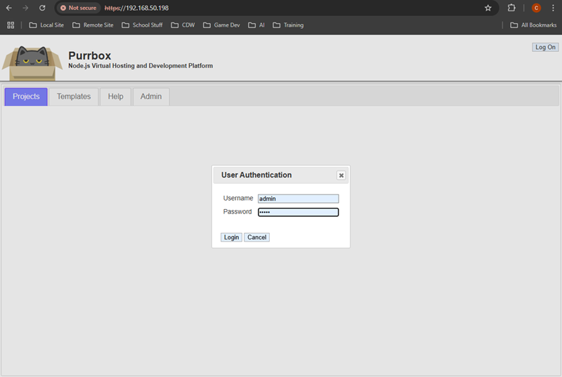

At this point you should have your OS configured, permissions, container built and ready for launch.
The following is an example of a docker compose file which sets up a container network called 'dockernet' with IP subnet, network driver setting, and defines the volume driver to use. The services section is configured for a single Purrbox container to run.
All environment variables are defined but are not specifically needed. You can safely comment out or modify any of the environment settings as required (See Section 1.04 Server Settings for environment variables). When the container starts up for the first time, it will create a default server and logging configuration files in the container aimed at running a dev environment and enbling the 'Management UI'.
For this example, we will run the Purrbox container with Node.js as 'CommonJS' mode, Purrbox web server in 'dev' mode, using mostly default settings and with 'Management UI' enabled. You will want to modify the 'PURRBOX_MGMT_UI' environment names to match your server hostname and/or IP address. Add each name separated by a comma. If planning to use the server hostname for website DNS or Proxy mapping, configure a DNS CNAME to resolve to the server hostname and that would be used for the 'Management UI' mapping and define that in the 'PURRBOX_MGMT_UI' environment.
Start by creating a compose file in the purrbox home folder.
$ nano ~/compose-purrbox-cjs.yaml
Copy the contents of the compose file below and modify settings as you require. Make sure to set the 'PURRBOX_MGMT_UI' settings
version: "3.5" networks: dockernet: name: dockernet driver: bridge ipam: config: - subnet: 172.18.0.0/24 gateway: 172.18.0.1 volumes: config: driver: local services: node-purrbox: image: purrbox:latest container_name: purrbox_cjs restart: unless-stopped entrypoint: node start_server.js environment: # Environment to overrides server configuration file PURRBOX_WORKERS: 2 PURRBOX_CACHE_ON: "false" PURRBOX_DEBUG_MODE_ON: "false" PURRBOX_MGMT_MODE: "true" PURRBOX_MGMT_UI: " mgmtui,mgmtui.domain.com,192.168.50.198 " PURRBOX_ENV: "dev" PURRBOX_ENV_NAME: "dev-test" PURRBOX_HTTP_ON: "true" PURRBOX_HTTP_PORT: 80 PURRBOX_HTTPS_ON: "true" PURRBOX_HTTPS_PORT: 443 PURRBOX_SSL_KEY_FILE: "ssl.key" PURRBOX_SSL_CERT_FILE: "ssl.crt" PURRBOX_AUTO_REFRESH_ON: "true" PURRBOX_AUTO_REFRESH_TIMER: 5000 # Environment to overrides logging configuration file PURRBOX_LOG_TYPE: "file" PURRBOX_LOG_FILE_KEEP_TIME: "7d" PURRBOX_LOG_SERVER_IPADDR: "172.18.0.1" PURRBOX_LOG_SERVER_PORT: "514" PURRBOX_LOG_SERVER_PROTOCOL: "udp" volumes: # Optional to bind map (if not embedding source code, SSL, etc) #- /docker/purrbox/conf/ssl.crt:/www/conf/ssl.crt #- /docker/purrbox/conf/ssl.key:/www/conf/ssl.key - /docker/purrbox/logs:/www/logs - /docker/purrbox/web_source:/www/web_source - /docker/purrbox/web_templates:/www/web_templates networks: dockernet: ipv4_address: 172.18.0.3 ports: - "80:80" - "443:443"
The compose file has several bind mounts to the filesystem folders that are not yet setup. Only the '/docker/purrbox' root folder is created. Create the following base structure to support bind mounts from the compose file.
$ mkdir -p /docker/purrbox/conf \
/docker/purrbox/logs \
/docker/purrbox/web_source \
/docker/purrbox/web_templates
Verify the folders exist.
$ ls -l /docker/purrbox/ total 16 drwxrwxr-x 2 purrbox purrbox 4096 Apr 2 23:47 conf drwxrwxr-x 2 purrbox purrbox 4096 Apr 2 23:47 logs drwxrwxr-x 2 purrbox purrbox 4096 Apr 2 23:47 web_source drwxrwxr-x 2 purrbox purrbox 4096 Apr 2 23:47 web_templates
In the compose file above, there are SSL certificate mappings that are commented out. The container will use some pre-built SSL default files if it doesn't find any in the '/www/conf' folder. You can either generate your own self-signed SSL or use a certificate that is signed by a trusted CA. If you generate SSL certificates, and use a different name, make sure to update both the environment variable 'PURRBOX_SSL_KEY_FILE' and 'PURRBOX_SSL_CERT_FILE' values with the SSL file names and the bind mount settings in the compose file so that it uses the correct files in the mappings. The server will look for existing SSL filenames and if the bond mounts are different, it will create new ones along side the bind mounted SSL files.
Now the compose file is ready to be executed and start your container. Run docker-compose to build the container.
$ docker-compose -f ~/compose-purrbox-cjs.yaml up -d Creating network "dockernet" with driver "bridge" Creating volume "purrbox_config" with local driver Creating purrbox_cjs ... done
The container should be running.
$ docker ps -a CONTAINER ID IMAGE COMMAND CREATED STATUS PORTS NAMES dfb1b7aa9198 purrbox:latest "node start_server.js" 7 seconds ago Up 6 seconds 0.0.0.0:80->80/tcp, 0.0.0.0:443->443/tcp purrbox_cjs
Check the docker networks are setup.
$ docker network ls NETWORK ID NAME DRIVER SCOPE 3ac83da38119 bridge bridge local 0ef30019946f dockernet bridge local 29c53cf3df92 host host local 7a3b841b8a1d none null local
Check the docker container logs to view startup configurations. If you setup the 'Management UI' hostname or IP addresses they will be listed in the server output.
$ docker container logs dfb1b7aa9198
Purrbox v1.1.0 (CommonJS)
═══════════════════════════════════════════════════════════════════════════════
Node.js VHost Server Cluster Controller
Controller is running: pid[1]
Configured for [2] workers
═══════════════════════════════════════════════════════════════════════════════
═══════════════════════════════════════════════════════════════════════════════
Node.js VHost Server
Node Version : v22.14.0
Platform : linux
Hostname : dfb1b7aa9198
IPv4 Address : 172.18.0.3
IPv6 Address :
Management Mode : true
Management UI Hostnames :
127.0.0.1
172.18.0.3
dfb1b7aa9198
localhost
mgmtui
mgmtui.domain.com
192.168.50.198
Environment : dev
Environment Name : dev-test
Cache Mode On : false
Debug Mode On : false
Auto Refresh : true
Auto Refresh Interval : 5000 milliseconds
HTTP State : true
HTTP Port : 80
HTTPS State : true
HTTPS Port : 443
SSL Key File : ssl.key
SSL Cert File : ssl.crt
═══════════════════════════════════════════════════════════════════════════════
:: [pid:17] VHost Worker started
:: [pid:18] VHost Worker started
Now it should be possible to login to the server from a web browser. If you are using self-signed SSL or the defaults you will get a browser error on connect to management UI that the site is untrusted. You can continue and the 'Management UI' will display.
